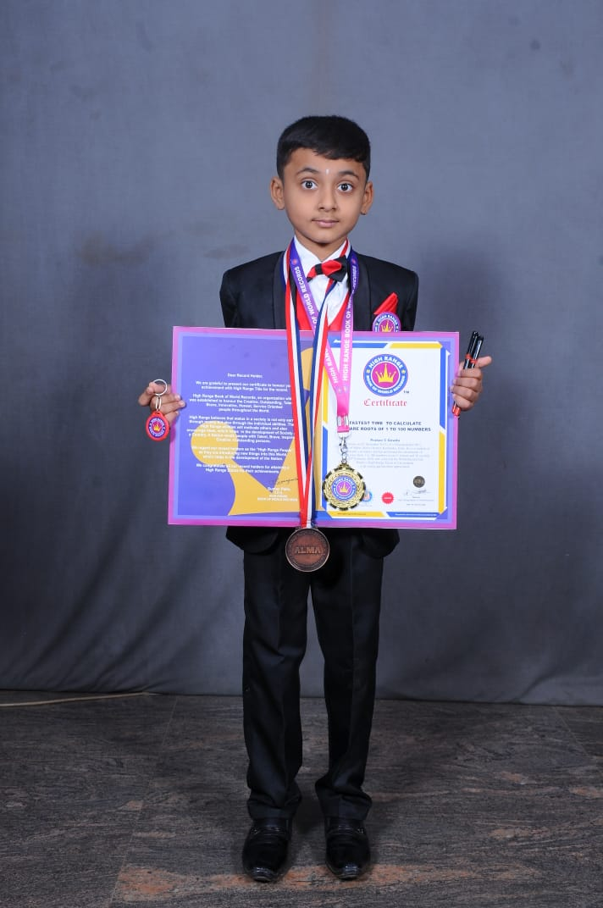

~ About Me ~
Hello there! I Master Pranav C. Gowda (Child Prodigy) of Malur Distt. Kolar (Karnataka).
India has been adjudicated by World Book of Records, London for an attempt of the record as Fastest calculation squaring numbers 1 to 100 in 85 seconds, trained by Mr. Mahesh M N Bryses Academy Malur, as guided by Mr. Murthy S. Spardhaguru, Event organized at Indo Sunrise International School, Hoskote Bengaluru (Karnataka) India on 29 February 2020. The certificate of record (Provisional) was presented to Master Pranav C. Gowda by Chief Minister of Karnataka Shri B.S. Yediyurappa bestowed the certificate of WBR and Ms. Tithi Bhalla (Secretary, World Book of Records) along with other prominent guests. This was informed by Shri Santosh Shukla, Supreme Court, Advocate (President, World Book of Records). On being adjudicated by World Book of Records, London, Master Pranav C. Gowda was congratulated by Shri Virendra Sharma (Member of Parliament, England), Shri Daler Mehndi (Brand Ambassador, World Book of Records - London), Dr. Diwakar Sukul (Chairman, World Book of Records, London), Shri Santosh Shukla (President, World Book of Records) and other dignitaries from international scenario. Chief Minister of Karnataka Shri B.S. Yediyurappa bestowed the certificate of WBR.
~ My Work ~
Squaring Numbers 1-100 in 85 seconds at age of 6
Achieved Track records!
Academic School Winner at Indosunrise International School Malur